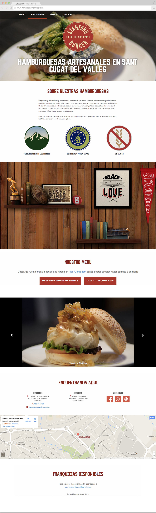

Branding and web development for a restaurant in Sant Cugat del Valles, Barcelona, Spain serving gourmet burgers.
I might be biased, but Stanford Gourmet Burger serves what are very probably the best burgers in Barcelona, Spain. Guided by the belief that sourcing the best and most sustainable ingredients is the foundation for the best food, head chef and owner Juan Abad has concocted a drool-worthy menu.
In 2011 they contacted me to design their brand—which was to be inspired by vintage collegiate imagery—and to build their website. All in all it was a fun (and delicious) project to be involved with, and it was an honor to work with the staff and owners of Stanford Gourmet Burger.
Visit stanfordgourmetburger.com >
A full screenshot of the Desktop version of the site.
